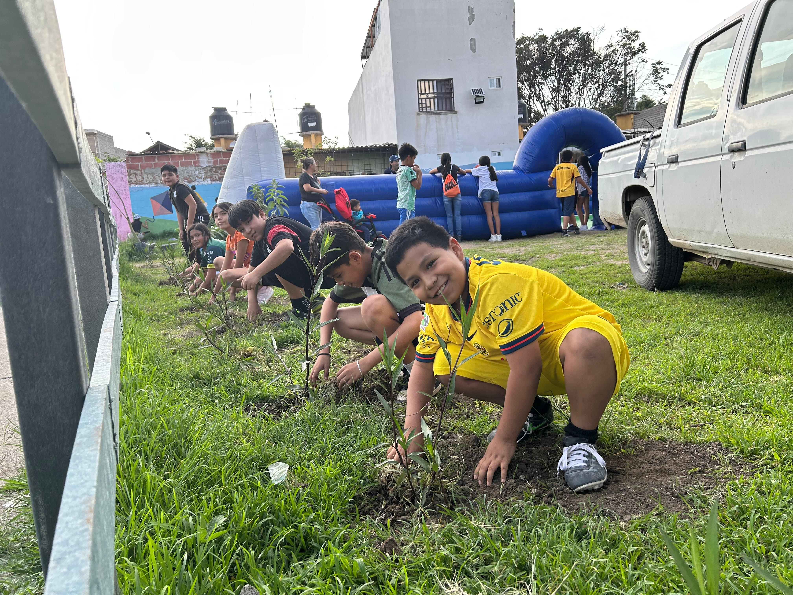
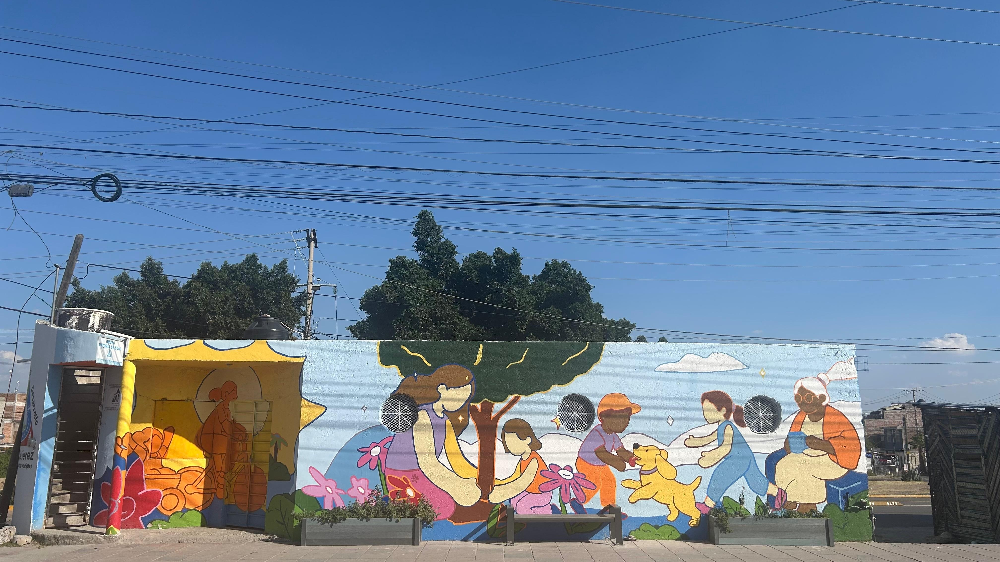
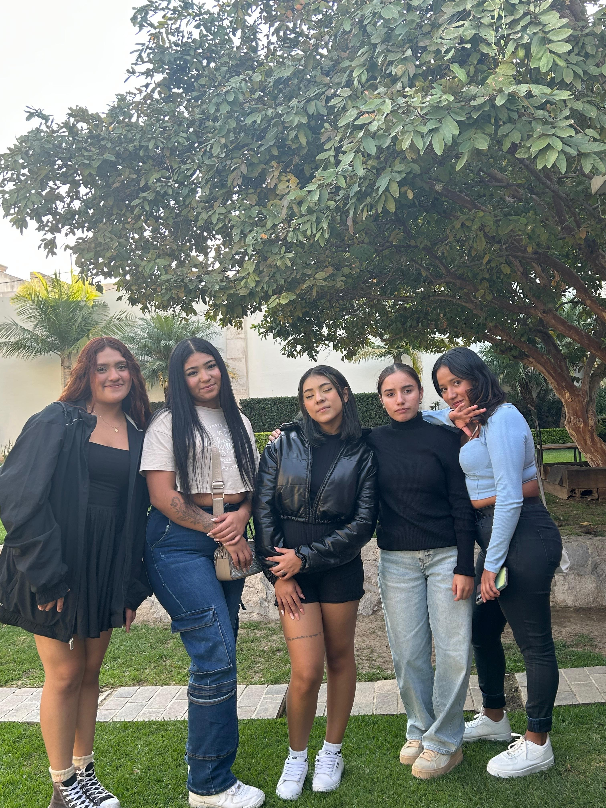
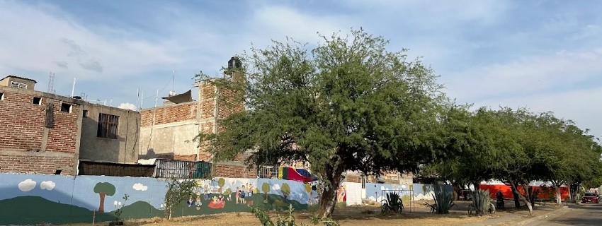

Parques rehabilitados
Áreas verdes recuperadas y seguras para las familias de León.
En Fundación Comuntia reconstruimos el tejido social mediante la rehabilitación participativa de parques públicos y el acompañamiento integral a jóvenes en situación de vulnerabilidad.
Solo necesitas 2 horas en fin de semana • Sin experiencia previa • Impacto 100% transparente

Áreas verdes recuperadas y seguras para las familias de León.
Jornadas de reforestación urbana y mantenimiento comunitario.
Vecinos, niñas, niños y jóvenes impactados directamente.
Participantes de Extiende tus Alas que continúan sus estudios.
Fundación de Comunidad y Empatía, A.C. (COMUNTIA) es una organización civil leonesa dedicada a conectar la energía de la juventud con las necesidades reales de nuestras colonias.
Impulsar el desarrollo comunitario y el emprendimiento social mediante la recuperación integral de espacios públicos y la impartición de talleres formativos, promoviendo la participación ciudadana para transformar positivamente el entorno urbano y social de las familias.
Ser la organización civil referente en innovación social y dignificación de espacios en el estado, reconocida por empoderar a los ciudadanos para construir comunidades autogestivas, empáticas y comprometidas con el bienestar de su entorno.
La reconstrucción del tejido social a través de la intervención y rehabilitación de áreas verdes y parques urbanos, combinada con la formación humana y la autonomía juvenil como herramientas para elevar la calidad de vida comunitaria.
Explora nuestros dos programas insignia seleccionando cada pestaña para conocer sus objetivos, logros medibles y alineación con los Objetivos de Desarrollo Sostenible (ODS).

Recuperamos parques urbanos y áreas verdes en situación de abandono mediante jornadas participativas de limpieza, reforestación, rehabilitación de mobiliario y pintura de murales comunitarios junto con vecinos y voluntarios.

Brindamos acompañamiento y apoyo integral a personas en situación de vulnerabilidad —especialmente jóvenes egresados de Centros de Asistencia Social— mediante becas, mentoría y vinculación laboral para impulsar su autonomía.
Desliza la barra o utiliza los botones rápidos para comprobar cómo transformamos un espacio abandonado en un entorno comunitario lleno de color y vida.

ANTES DESPUÉSMostrando comparativa equilibrada (50% Antes / 50% Después): limpieza, reforestación y pintura participativa de murales comunitarios.
¿Poco tiempo libre? Nuestras jornadas de fin de semana duran solo 2 horas (9:00 a 11:00 AM) y nosotros ponemos las herramientas.
Selecciona si deseas integrarte como voluntario en campo, donar insumos/becas o proponer una alianza escolar o empresarial.
Llena el formulario en menos de un minuto con tus datos básicos y el programa en el que prefieres participar.
Recibe tu confirmación y únete al canal oficial de WhatsApp para conocer fecha, parque y punto de reunión.
Completa los campos marcados con para registrar tu interés.
Encuentra nuestros datos públicos de atención en León, Guanajuato y conoce nuestra causa en menos de dos minutos a través del video institucional.
Conoce cómo transformamos entornos físicos y construimos comunidad a través de nuestra campaña visual y programas en León.
En un entorno productivo, este botón te redirigiría directamente al canal de difusión de WhatsApp (477-123-4567) donde recibirás máximo 2 avisos breves por semana con nuestras convocatorias de voluntariado.
"¡Este sábado toca transformar el Parque Altacia! Solo 2 horas (9:00 a 11:00 AM). Nosotros ponemos las herramientas. Confirma tu asistencia respondiendo ME SUMO."